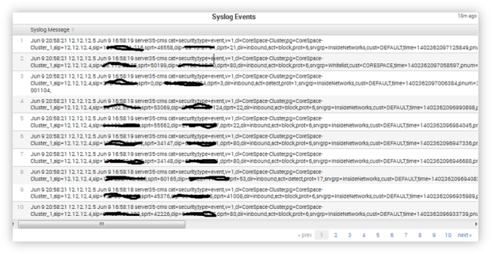

Show search and navigation tools
|
Field |
Description |
|
Server_Port |
The Destination Port that is associated with security events. |
|
# of Events |
The number of Blocked Inbound security events that are associated with this Server Port. |
|
# of Client IP’s |
The number of source IP addresses that performed suspicious activity against this Server Port. |
|
# of Server IP’s |
The number of destination IP addresses that reported suspicious activity against this Server Port. |
|
IP Protocols Used |
A numerical list of what IP based protocols were found in the security events that were performed against this server. |
|
Rules Blocking Traffic |
The number of Corero Rules that were triggered for security activity performed against the Server Port. |
|
Mitigation Activity Sparkline |
A simple time chart based on the number of events that were seen throughout the time period. Each data point reflects a 10 minute period of time. The green dot is used to identify the time period that contained the largest number of events. |
The Syslog Events table is only shown on the drilldown page and it displays the first 300 Syslog Events that match the provided search criteria. Drilldowns are not available from the Syslog Event Table.

Field Descriptions
|
Field |
Description |
|
Syslog Message |
The Syslog Serer time that the message was received is displayed along with the raw syslog message that arrived from the appliance is displayed in this field. |